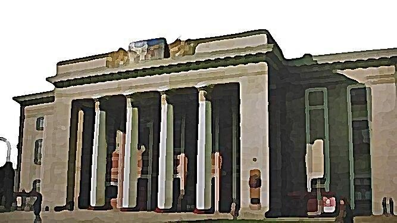
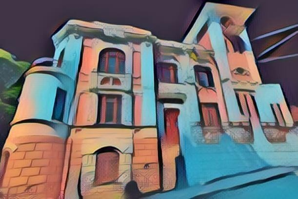

Інформація про будівлі

Будинок офіцерів
Вінницький Будинок Офіцерів, побудований у 1934-1935 роках за проєктом видатного архітектора Й.Г. Каракіса, є пам'яткою архітектури місцевого значення, внесеною до переліку 25 липня 1997 року. Будівля...
Детальніше.jpeg)
Вінницька жіноча гімназія
Це була біла двоповерхова споруда, виконана у стилі класичного модерну. На другому поверсі головного фасаду розмістили велику трьохцентрову арку, яка стала окрасою не лише самої будівлі, а й головної вулиці....
Детальніше

Вінницьке Архітектурне бюро
Історичне Вінницьке архітектурне бюро не існувало як окрема структура, але його діяльність була пов'язана з архітектором Григорієм Артиновим, який у 1911 році спроєктував відому Водонапірну вежу міста. Ця вежа стала...
Детальніше